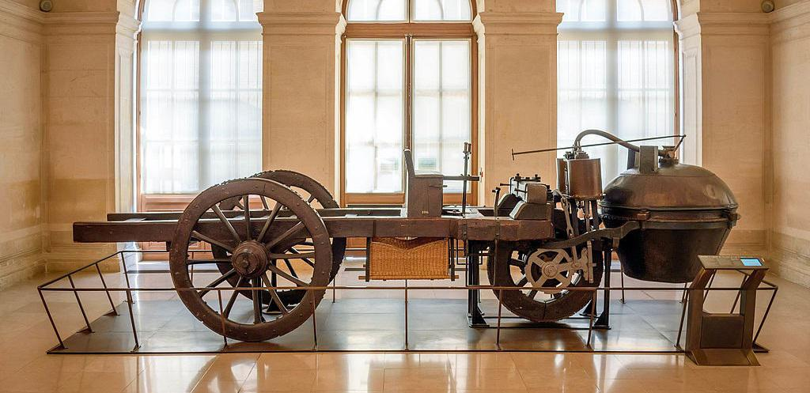
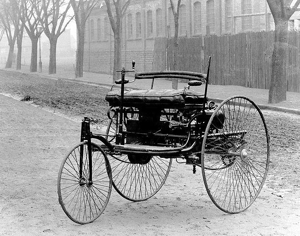
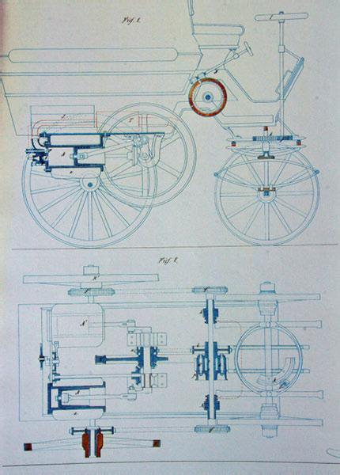

Descubra as polêmicas por trás da invenção do primeiro carro do mundo
Há relatos de veículos com roda movidos a vapor no século 17, na China, porém a comprovação das informações é difícil pela falta de documentação. É bastante possível que vários inventores tenham trabalhado em diferentes pontos ao longo dos séculos 17 e 18, conforme os motores a vapor iam se desenvolvendo.
Em 1769, temos a invenção do engenheiro francês Nicolas-Joseph Cugnot , um veículo (similar a uma carroça) movido por um motor a vapor. Até hoje,muitos o consideram o inventor do carro, afinal o veículo se movia sozinho, propelido pelo motor a vapor e uma grande caldeira.
Durante o século 19, motores a combustão foram desenvolvidos, e muitas pessoas trabalhavam em uma maneira de atualizar os “carros”. Em janeiro de 1886, o engenheiro alemão Karl Benz patenteou a Benz-Patent Motorwagen, um carro com motor monocilíndrico movido a gasolina. Benz é considerado, por muitos, o inventor do carro moderno, sua empresa posteriormente se tornou a respeitada Mercedes-Benz.
As especificações podem parecer ruins, mas em um mundo movido a cavalos, o feito foi revolucionário. Alguns dos defensores de Karl Benz como inventor do carro chamam a atenção para o fato de que esse foi o primeiro modelo a ser produzido para ser comercializado, diferentes de outros possíveis candidatos ao título.
Alguns pesquisadores apontam para a invenção do austríaco Siegfried Marcus, em 1870, como o primeiro carro. O veículo era movido a motor de combustão, mas foi pensado inicialmente como motorizado de transporte de carga. Há relatos de que o governo da Alemanha nazista tenha apagado registros históricos da invenção devido à origem judaica de Marcus.
Outro candidato a primeiro carro do mundo foi a invenção do francês Édouard Delamare-Deboutteville, em 1884. Ele patenteou um veículo movido a motor bicilíndrico alimentado a gás de petróleo, com quatro rodas e transmissão por correntes. A invenção, porém, não chegou a ser produzida em série nem comercializada, perdendo relevância histórica.
